# 雨的哲学，也是泪的形而上学
来源抖音 @cherryonthecake
全世界的水都会重逢
但我高中选了地理，本科学的是水利科学工程，我知道水更新的速度有多慢
两个人一生的眼泪，除了脸颊相贴以外，不会再有第二种可以融为一体的方式了
或许还有的，相互拭去彼此的泪水，再十指相扣
# 心流泪
来源抖音
心脏太小了，拳头大小的容器，装不下那么大的悲欢离合，于是出现了眼泪。
悲欢离合自眼眶离开，最终被大地所保管。
有些事说出来太小了，放心里又太大了
# 校园绿色电话机
来源抖音
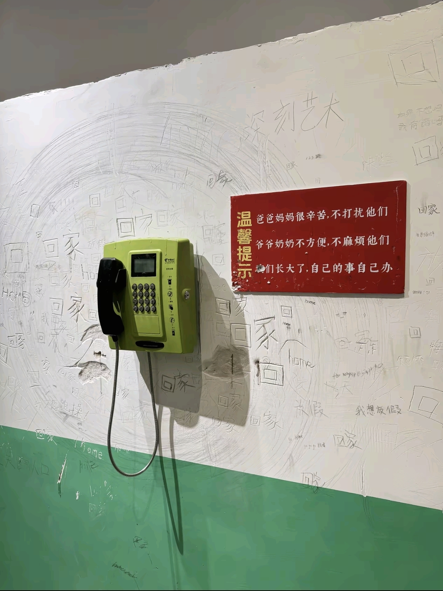
连我脆弱的权利都掠夺
# 财 & 债
来源知乎
背上的债务才是从外界获取的财产，
持有的现金反而是外界给你的欠条。
# 圣人不死，大盗不止
来源知乎
“圣人不死，大盗不止”，不能按字面理解成：只要圣人死了，天下就没有盗贼了。他是在说一种很尖锐的政治哲学：
大盗不是单靠贪心产生的，大盗往往产生在一套高度文明、制度化、名分化的秩序里。
《胠箧》里有一个很重要的比喻。人为了防盗，就把箱子绑紧，把柜子锁牢，把财物藏好。结果大盗来了，不是打开箱子偷一点东西，而是直接把整个箱子背走。而且箱子绑得越紧、锁得越牢，大盗搬起来越方便。因为你已经替他把东西整理好了。
庄子用这个比喻讲政治秩序。礼法、制度、名分、权力、刑罚、赏赐，看起来是用来防乱的。但一旦被大盗掌握，就会变成更大的作恶工具。普通盗贼只能偷一户人家。掌握制度的大盗，可以合法地夺取整个国家。所以庄子所谓 “大盗”，不是普通毛贼。而是会窃取天下、窃取名义、窃取制度的人 ——
他不是半夜翻墙。他白天坐在朝堂上。
他不是自称盗贼。他自称仁义。
他不是说 “我要抢”。他说 “我要治国”。
他说 “为了天下”。他说 “为了秩序”。
他说 “为了礼法”。他说 “为了百姓”。
庄子最警惕的正是这种东西：
恶一旦披上圣人的语言，就不再像恶。
抢夺一旦获得名分，就不再叫抢夺。
压迫一旦进入制度，就不再显得残忍。
那为什么庄子会把矛头指向圣人，尤其是孔子？因为在庄子那里，孔子不只是一个历史人物。孔子代表的是一整套儒家秩序：仁义礼乐。君臣父子。名分等级。教化治理。道德规范。社会秩序。
庄子反感的不是孔子个人吃饭睡觉，而是 “圣人之治” 这套东西。在庄子看来，圣人一出来，就开始给世界立标准：什么叫仁、什么叫义、什么叫礼、什么叫君子、什么叫小人、什么叫正统、什么叫邪僻。本来人只是自然地生活，后来开始被这些名分切割、排序、规范、评价。于是人不再只是人，而变成某个秩序里的角色。
庄子真正怀疑的是：这些看起来高尚的东西，真的能消灭恶吗？还是会制造更高级的恶？比如 “仁义” 本来是好词。但一旦进入政治，它就可能变成统治话术。谁掌握了仁义解释权，谁就可以指责别人不仁不义。谁掌握了礼法，谁就可以决定谁高谁低、谁正谁偏、谁该受罚、谁该服从。于是圣人制定的价值秩序，最后可能被权力者拿去使用。这不是圣人想当大盗。而是圣人的制度和名分，给大盗提供了工具。
所以庄子不是说：孔子本人拿刀抢劫。而是说：当孔子所代表的仁义礼法被绝对化、制度化、权威化以后，它就可能变成 “大盗” 的资源。大盗最喜欢什么？最喜欢现成的秩序，现成的名分，现成的道德语言，现成的服从习惯，现成的国家机器。因为这些东西能让他的夺取看起来不像夺取，他不必说自己是强盗。他只要说自己是天命、正统、仁义、秩序的代表就够了。
这也是庄子和儒家最大的分歧。
儒家相信，社会混乱，是因为人没有礼、没有仁义、没有教化。所以要立圣人之道，用礼法教化人心。庄子则怀疑：越立标准，人越会伪装。越讲仁义，越可能有人借仁义牟利。越重名分，越可能有人窃取名分。越强调治理，越可能有人以治理之名伤人。儒家想用圣人来压住盗贼。庄子说，大盗最会利用圣人。
所以，“圣人不死，大盗不止” 不是一句反智口号。它是在说：当一个社会过度崇拜圣人、迷信道德名分、相信只要立好制度和礼法就能消灭恶时，反而可能看不见更大的盗贼。
因为大盗不一定站在礼法之外。大盗常常就站在礼法里面。
他用圣人的话，行盗贼的事。
# AI 之恶？
来源 B 站 + 知乎作者润色
「机器人会抢走人类的工作」不算什么问题，
真正的问题是我们生活在一个「被机器人抢走工作竟然是坏事」的世界。
# 韩流与深空
来源知乎
叠纸终于认识到自己的客户不是二次元玩家而是拼多多式下沉用户了吗。
叠纸这家小小的公司，既是泛二次元文化扩圈的先头部队，又是伪现充追星妹进入泛二次元的桥头堡。
事情要从 2016 年说起。
2016 年韩流在内地近乎全面封杀，出现了大量流浪人口。与此同时，B 站代理了 FGO，商业化进程高歌猛进。泛二次元文化一边走向大众、一边又是小众而稍显陌生的，于是二次元＆ACGN＆同人圈成为了吸引年轻女性的时尚的韩流替代品。
第一批追星流浪人口徙入泛二次元的时间大约在 2017-2019 年前后，差不多紧随 16 年。2021 年内娱选秀叫停，原本回流到内娱的追星流浪人口再次迁入泛二次元。
同时在三次元里逐渐形成了饭圈 - 女权 - 文娱资本的三位一体状态，于是在舆论场上有了只要一出舆情就条件反射地起承转男。在接下来我报菜名的每一次事件中，都能看见没有男人就无法直立行走的起承转男。包括本次叠纸事件。
迁入 A，有了《我的英雄学院》的火爆与销声匿迹，有了美妆博主转型锐评动漫的 StellaaQ（搁以前现充对着哪怕是所谓民工漫哈气也很难不被达斯），有了《罗小黑战记》《凡人修仙传》等许多动画的女权营销，直接引发了 527 鹿野成仙事件。
迁入 C，就有了 JM 事件。
迁入 N，造就了耽美的爆发和《魔道祖师》《陈情令》这个奇观，有了《诡秘之主》的风靡，有了网文站点和作者吸引女粉的各种操作。同时也有了自 2020 年开始的以女性主义为纲领的针对网文作者的爱女写作指导，有了 327 晋江反人类小说内战与老天奶事件，以及由来已久并愈演愈烈的激腐会战。还有了玛丽小贝跑去番茄男频自嗨，有了彝人烟火被集火爆破。
迁入 G，有了 2017 年《恋与制作人》的成功，有了女性玩家联合会，有了公认最下沉的《恋与深空》，有了无期迷途和缅北二游，有了逆水寒无根门、米哈游大丽花、燕云十六声飞白、洛克王国鸭子坐。
2017 年《恋与制作人》开服，叠纸开创国乙赛道，国产乙游圈从天而降。与老二次元色彩浓厚的日乙明显不同，国乙吸引了大批从未玩过乙女游戏甚至从未玩过游戏的年轻女性，国乙的基地一开始是娱乐大本营微博，后来是小红书。国乙更像是追星，而不是游戏和二次元。
进入全国最大的同性交友网站 Bilibili，就有了 up 主的饭圈化，有了 up 主露脸的真人综艺，有了阴阳怪气男团，有了逍遥散人的起高楼与楼塌了，有了 Lex 从动画区秽土转生生活区。
新老二次元相互试探触碰到边界，2020 年，一场必然的会战偶然地在 AO3 爆发了。随后墨香铜臭和《魔道祖师》、肖战和《陈情令》，都被老二次元圈拒之门外。同样的，2026 年 527 鹿野成仙事件也是一次新老二次元的局部会战。
Bilibili 的真人 up 圈曾经是传统二次元与新二次元拉锯的战区，逍遥散人、花少北、某幻这些人一定程度上都成了历史进程的炮灰。后来在 B 站崛起的小潮院长、力元君、雨哥到处跑等人，身上几乎没有什么老二次元色彩，对商业化饭圈化状态也适应良好。
接下来赶到战场的是《恋与深空》。国乙本来就是二次元与伪装成二次元的追星女激烈交锋的前线，《恋与深空》的开服给一度走向稳定的战线掀起了腥风血雨。
我几年前看过一个尬吹乙游质量高、玩家素质高的回答：
为什么美女还会玩乙女游戏？
核心观点如下：
（1）乙游反而是中上收入学历较高的女性群体才会玩的；
（2）项目组大半都是 985 高学历女生，一群本硕 985 精通汉语言的小姐姐竭尽全力设计出来的完美男性，很难有女性会拒绝。
现在看这个回答的两个核心观点是不是都很幽默？
“乙游反而是中上收入学历较高的女性群体才会玩的”，绿鹅腿也是中上收入学历较高的群体才会去吃的。这只是说明乙游还没下沉，就像早年老二刺螈的平均阶层不可能偏低。
至于第二个观点就更没道理了。百万设备制造的产品该卖九块九就卖九块九，该卖不出去还是卖不出去。制造者的身价不代表产品的身价。
这种话术只不过是试图把乙游营销成一个体面的符号，消费了这个符号就可以让自己变成体面的上等人，再让乙游玩家说出 “我们爱的是背后女制作者的灵魂” 等咯噔名言时有据可依。
但原回答不能说完全错误，因为原答写于 2023 年。2024 年 1 月《恋与深空》开服，乙游高贵的大厦上出现了一朵小小的乌云。
《恋与深空》对其他 2D 国乙构成了升维打击，3D 显然更像真人，使得更不二次元的群体也进入了这个不三不二的文娱领域，《恋与深空》成了很多年轻女性的第一个乙游甚至第一个游戏，在实质上成为了一款拼多多式下沉乙游。
于是有了沈星回男 coser 被国乙妹赶出漫展，有了在 327 晋江事件和 527 鹿野成仙事件中人们口耳相传的 “查成分一查一个恋与深空” 的赛博风评。
叠纸经营这款下沉乙游的思路其实是有一定章法的：产品随便做做（五百天不更新主线），定期出一张大尺度卡面指挥小头控制大头，靠着社区产出和情绪共振运营 —— 这一点其实所有国乙都一样，毕竟是伪装成游戏的追星。
事实上也运行得不错，五百天不推剧情也好，所谓的 731 与女性安全节奏也罢，根本不足以上桌，反正玩家连游戏性都不在乎。叠纸受众并不在乎什么女性权益、创作自由、国家民族、历史伤痕，所有这些在她们心中不如一根 3D 人形幻龙。如果这群人真的是现充就好了，至少可以在商言商，但问题是她们的现并不充。她们是一群精神生活匮乏的伪人，除了社交之外没有爱好，除了跟风之外没有价值取向。
叠纸阴差阳错变成了一以己之身承受着中国所有追星妹压力的 SM 公司。
叠纸这回翻车是因为拼多多下乡进村，影视圈无法流出玩家增量，《恋与深空》已经沉无可沉，于是想要拓展外服的下沉市场。狼人就是一个像霸道总裁一样百试百灵的万能钥匙，网文出海会无脑推狼人文吸血鬼文黑手党文。
说哪个游戏是赛博锁妖塔是没有意义的，因为追星妹是锁不住的，她们的每一片羽毛都闪耀着跟风的光辉。
从之前报菜名的各种节奏和事件的数量对比就能看出，ACGN 中谁处于半死不活的状态：奄奄一息的 C，几乎变成了 N 的下游。肉眼可见 C 遭遇的攻击和侵扰也最少。
这说明要追星妹和伪装成二次元的追星妹待在不能社交、不能跟风、没有热度、不能得到关注的圈子里比杀了她们还难受。所以男性彻底退出传统影视圈和娱乐圈之后她们自己折腾几年也觉得没意思了，抛下满地狼藉跑来 ACGN 鸠占鹊巢。
近年泛二次元火热，她们就凑热闹一拥而上，叠纸端新游戏上桌也会有人买单。等到泛二次元没落，她们也会走向下一个热点区域。她们本质上不会守着一亩三分地自娱自乐，只有在人群中才能感知到自我的存在。
至于我们的二次元会变成什么样？
事已至此，我是真心希望韩流重回中国。只要卡卡发起进攻，一切都会好起来的。
# 瘸
来源知乎
因为当代的进步主义思潮，并没有包含男性出走的部分
娜拉出走是新文化运动以来的主线叙事，但林冲和武松的夜奔，没有类似地位，这直接导致了整个进步主义的理论大厦，面临左脑打右脑的情况。
思考一个问题，
对于当下中国而言，什么样的爱情，是会被大众赞扬，符合政治正确的？
祝英台说我不嫁梁山伯了，我看马文才家境殷实，父母也同意，所以我就嫁马文才，行吗？
大概率不行，因为又是门当户对，又是父母之命，媒妁之言，这不是封建保守吗？
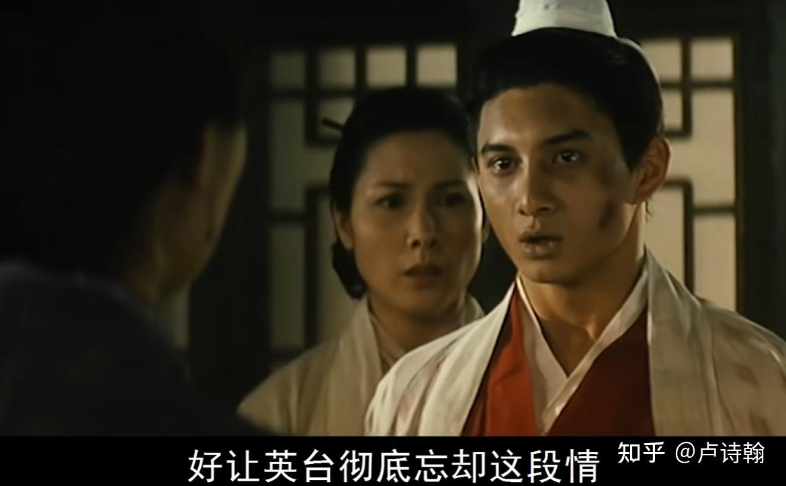
什么样的爱情是会被歌颂，拍电视剧，甚至上教科书的呢？
牛郎织女，梁山伯祝英台，许仙白素贞，小燕子五阿哥，杉菜和道明寺。
总而言之，跨越阶级，
语文题目，只要是涉及婚恋元素的，就有一个万能答案，
深刻揭露了封建礼教的落后保守，热情歌颂了男女主人公敢于反抗的革命精神，寄托了古代人民群众对自由爱情的美好寄托。
不确定的时候，把这三句写上去，基本都能拿分，
自新文化运动以来，一段好的爱情，潜台词是什么？
首先肯定不能是门当户对那种，封建保守
才子佳人，举案齐眉也不够，无法体现主人公的革命性
最好就是小燕子和五阿哥，杉菜和道明寺这样，
男方天潢贵胃，女方草根平民，并且，女方还特别活泼，能将传统束缚踩在脚下的，
对于许多人而言，一双水灵大眼的小燕子大闹皇宫，将陈规旧矩踩在脚下的时候，
这个角色不但在喜剧层面征服了大众，在文学层面也获得了升华，完美符合当代政治正确
所以大家吐槽归吐槽，可霸道总裁爱上我，千金小姐中意我这套故事，到今天依然有生命力，依然能横扫市场，这也是多年以来，左翼思潮能够收获大众认可的关键。
这不是底层幻想，这就是正儿八经的新文化运动左翼思潮延续
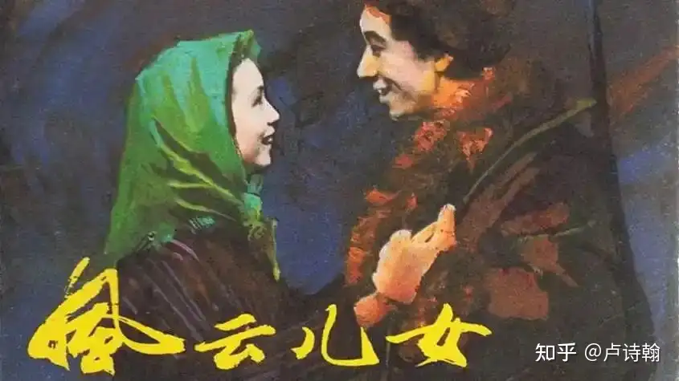
但到了当代，现实主义的崛起，女性主义的抬头，各方共同作用下，这套逻辑出现了问题，
现实主义认为卖油郎无法承载生活，女性主义认为花魁找卖油郎是吃亏下嫁。卖油郎的叙事开始崩塌，代表性分界线，我认为是蜗居，自那之后文娱作品中卖油郎，老实人主角大量减少。
也就是王子爱上灰姑娘，花魁爱上卖油郎这套革命叙事，到了当代，只剩下一半了。
王子爱上灰姑娘是自由恋爱，是打破枷锁，依然被视为进步主义的一环，值得歌颂
但花魁爱上卖油郎就是穷书生幻想，是低俗爽文，不再被视为进步主义范畴，而被认为是难登大堂的。
国内文娱市场所有的问题，本质上都源自这里。
五阿哥和小燕子是可以大大方方的唱山无棱天地合乃敢与君绝的，大众也会赞颂这是进步的，打破封建束缚的。
但是牛郎织女，在当前环境下已经顶不住了，你们可以去看一下相关话题，全是批评牛郎癞蛤蟆吃天鹅肉的。
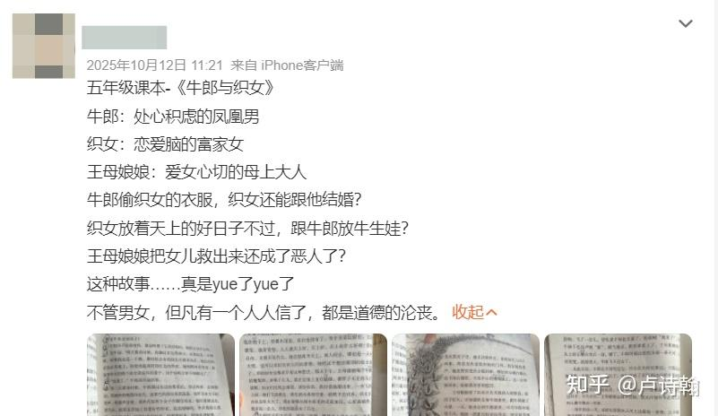
而在这场大批判，大解构过程中，左翼知识分子做了什么呢？
他们有坚定的站出来，反对性别叙事，捍卫阶级叙事吗？似乎并没有
甚至不少人想当然的认可了这套叙事
这个选择，直接决定了今天的现状，当你将女频那套性别叙事加入进步主义后，你突然发现
—— 这套新的进步叙事，和整个男频文学，存在直接的冲突
在过去的革命叙事里，牛郎织女，西厢记，牡丹亭，都属于自由恋爱的典范，是进步的。
但在当前的进步主义，女性主义叙事里，这几个都属于癞蛤蟆吃天鹅肉，底层幻想
相府千金居然不爱豪门公子，去和一介布衣的书生相恋？这不是底层爽文无脑媚男吗？必须狠狠的批判！
要不是牡丹亭西厢记名气大，我估计这两位都得从语文课本滚蛋。
包括很多人动不动活在大清，我也要澄清一下，这个说法存在很大的误解。
目前男频的情况是，你甚至没法复刻西厢记的经典叙事，西厢记是什么时代的作品呢 —— 元朝
你一个进步主义，居然快玩不过大元了，就这还问大众为什么不认可你
这种左脑打右脑的困境，直接导致了当前文艺市场的衰退
灰姑娘和穷书生是自古以来经受了无数历史考验的经典设定，也是大众最容易带入的角色，但现在的舆论环境下，穷书生和千金小姐这个经典叙事无法登录市场，甚至别说千金小姐了，连浪浪山的猪妈妈都要被质疑觉醒和出走，你说国产电影还怎么玩？国产 galgame 要不要疯？
更典型的是海棠文学
女作者写黄文被抓，很多法律工作者站出来捍卫创作自由
男用户认为就应该抓，然后被批评不进步，
但问题在于，当年也正是进步主义者，坚决的封禁男频黄文，
进步主义认为，黄文小说是不好的，大众认可了，于是黄文被封禁，罗森紫狂等作者被判罚。
结果到了女频这边，进步主义突然认为，女作者创作黄文是好的，是创作自由，封禁黄文才是不对的，不进步的
这种原地 180° 的掉头，直接导致整个进步主义的叙事崩塌
甚至连带引发了这两年大众对于扫黄问题的态度反转。
因为如果女频黄文可以被视为创作自由，进步的一环
那么扫黄的合理性在哪？
你说是为了女性人身安全，好，没问题
那么 ——AI 黄色作品，他是进步还是不进步的呢？
讨论进行到这一步的时候，你会发现
当代进步主义甚至连一个基础的逻辑都无法维持了
女性写黄文是创作自由，是进步的，要包容的，
但你们用搞 AI 黄色，那是不进步的，要严厉禁止的
女性呼唤高铁卫生巾，搞追星女采茶女议题是进步的，是改善社会，男性应该学习
但男性这边真的开始呼吁法治公平消灭彩礼呢，
—— 那毫无疑问是不进步的，是裤裆民族主义
相信我，就这个问题，我绝对没有虚空打靶
这真的是同一个人说的
所以，与其说右翼崛起，不如说当下的左翼遇到了理论危机
并且还是非常大的危机
我对危机标准有一个直观评判办法
如果一个问题，存在争议，来回论战，那这个问题属于影响极大，但真实杀伤力有限的。
但如果一个问题，明明已经端到脸上，但一整个思潮，却好像完全没发生一样视而不见，
那这个问题，就是真正的大问题。
不是默契的视而不见，而是目前的理论体系根本没法回答这个问题，所以只能视而不见。
# 丑清
来源知乎
现在不缺骂满清的声音，却很缺乏对症下药。
就好比这是一个美术通识的问题，但鲜见专业术语去批驳，都是主观感受。
这不是好事。
我们要明白无论满族还是满遗，体量不及我们百分之一。可却在舆论场上，能跟我们打得有来有回。这明显是有话术培训，有资金有队伍。
如果我们还是只在意所谓的民心，情绪对轰，那还是不能正本清源。
我们对于满清批判的现阶段，更应该是专业系统的否定。就比如这个问题也应该专业对口。
我虽然学艺不精，我好歹是美术生，拙评一二。希望跟大家抛砖引玉。
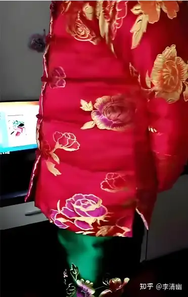
第一宗罪，满清的所有服饰饱和度太高，违反美学上最基本的色彩协调。
大家从小听过一句民谚，红配绿，丑到畜。
意思是说，红色不能配绿色，意思会非常不好看。
我开始爱打扮的时候就听过这个观念，一直都信以为真。
我长大了，开始接触汉服形制，更系统了解色彩学的时候，才发现这句话站不住脚。
因为汉服婚制长期以来都是红男绿女，男穿红袍女穿绿衣。而且古代新娘穿绿色衣服，红色也是辅色。
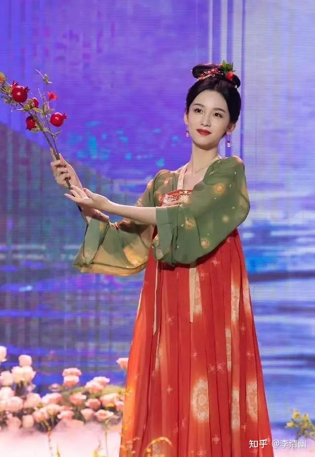
无论整个场景，还是新娘衣服，都会让你觉得相衬此景不觉得违和。而且再稍加了解，就会知道汉服有一个经典色彩形制，就是红穿绿，让看似两个极其对立的颜色实现美的协调。
在西方人那也是一样。但凡看过巴黎时装周米兰时装周的剪辑，都知道其时装的色彩运用是极其大胆的。
模特不仅穿红绿，更穿蓝橙，黄紫。反正什么颜色难搭配，什么颜色就展现在模特衣服上。设计师都在一一炫技。
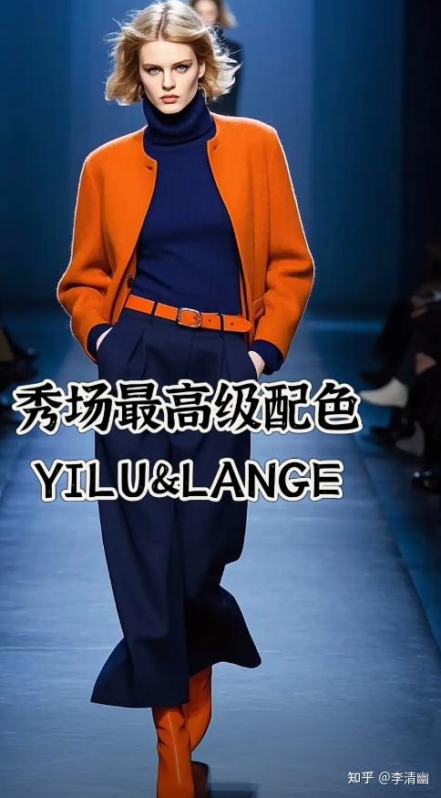
可是他们的衣服依然是协调，好看。
这都是为什么呢？
有点美术基础和深谙服装搭配的人，应该察觉出来了。
因为无论汉服还是巴黎米兰时装，都遵循了一个原则。当一个图案（服装）整体要用多色彩时，明度必然不对等，颜色必然分主次。
就比如巴黎模特穿一个橙色大衣，必然只会在丝袜或鞋子上用蓝色。
汉服的红穿绿，红色都是大幅大幅的铺开，绿色都是边袖和衣襟才有。
而且无论汉服还是现代服装，服装搭配都会有一个主色调，其他色彩出现都低明度出现。颜色饱和度绝对不一，绝对拉得很开，红色很亮，那绿色就很暗。
这就是美学中最基本的色彩原则。通过色彩饱和度拉开，使得图案（服装）整体有节奏有呼吸感。使用对立的颜色，是为了让服装色彩更加出挑。
只有有亮有灰，有主有次，红才能配绿。
那我们从小听到 “红配绿，丑到畜” 从哪里来的依据呢？
就是满清遗留下的审美。满清的所有服饰，都是以高饱和度著称。
红色绿色衣服，那就红得绿得像红绿灯一样晃眼。
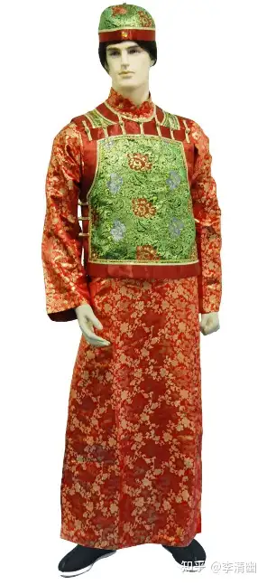
满清官服即便都以深蓝为主（满清推行五行中的水德），低调的深蓝也像几十年没洗过沾满油污的油亮。
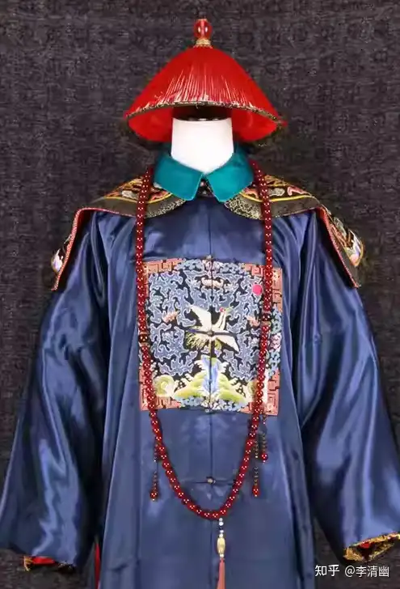
服饰形制的色彩永远是先于版型和具体设计，因为这是人的第一视觉。
色彩心理学也早就就给出过，颜色饱和度明暗对人的影响。
颜色偏灰偏冷，会让人冷静思考。今天家里刷的墙和办公器具，都是黑白冷色调为主，这都是长期相伴的器物需要冷灰。
颜色偏亮偏暖，就是会让人焦躁，会勾住人的情绪。今天所餐厅色调大都是红黄色，就是为了勾起人的食欲，黑蓝色调餐厅买的人肯定很少。反之红黄色装修的房子呆一两天就会心烦气躁，黑白色的装潢不影响人的情绪。
因此，我们就能理解为什么很多人第一眼看到满清服饰感觉不适。
就是因为满清颜色饱和度太高。红橙蓝绿青蓝，什么色都很亮。看着人就是有焦躁的感觉。
尤其当满清服饰还试图秀技术，把红色绿色（马褂），蓝色橙色（满清奖赏功臣的黄马褂）结合一起的时候，更是看着反胃。
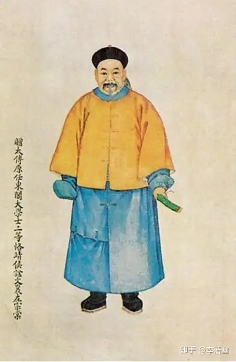
满清只看重纯色亮明度，任何服饰再怎么做工都很难符合美学。这本来就是审美逻辑的一条绝路。
因为，学过美术的都知道，普通美术生色彩水粉的功力就在于对灰色的使用。
美术生眼里的世界，应该就是灰的。这个灰，是区分纯色调色前的定义，不是真正的灰色。
因为灰色，才能体现彼此色彩的过度，映射环境对物体的影响。水粉考试拿高分都是调环境色的高手，环境色就是多种颜色揉进去的结果，对自然界的写实。
没有灰色，就对比不出亮色，画面就无法立体。服装也是一样。
除非你是梵高。外行人不懂梵高的画被捧成这么高，就是因为梵高是极少数能驾驭整张画面都是高饱和度颜色的协调。却依然很好看。他相当于一定程度上违背了此前美术教育的逻辑。
可即便是梵高。他的画面依然有焦点，有视觉中心。虽然笔触都是纯色杂糅，也依然有主次，有对比间的明暗。依然符合美术色彩的定义。
满清的美学，肯定不是超验地早梵高之前实现了美术革命。它的视觉灾难，就是完全没有美术素养，胡乱堆砌浪费颜料。
当然，满清是有理由说的。
因为，东北亚萨满文化中纯色是高贵，神性的象征。在他们的语境里，身着颜色最纯的人越有神性。满清出自萨满教族群，文化根基和思想逻辑来源于此。这时候颜色搭配完全不顾色彩的实用性，成了神明的喉舌。自然反映在服饰上，就是视觉灾难。
可如果说纯色难以避免，是满族的 “祖宗之法”。
那满清服饰的结构，毫无建构，就只能说满清的美术天赋有点太差。
这就是满清的第二宗罪。
满清服饰的审美，毫无服饰的结构性，修饰不出服饰该有的版型和设计。
何为服饰的结构？
我相信学过美术的人，都知道 “上紧下松”，“放高留低”。意思是一副画面，物件都要放在靠近画框的上方，下方只用铺线和涂色。
这也是遵循了美学准则的视觉中心。人的眼睛是有疲劳效应，必须有足够的焦点才能阅读信息。画面进行留白和集中，也是为了人脑的节奏感服务。
画画如此，服饰同样如此。
我们就拿拿破仑军服和高定女裙装举例。
你会看到，拿破仑时期的军官们上衣是极其不对称，衣服上的装饰像是满天繁星。可你要往下看，就有点潦草，紧绷的腿裤，甚至微显阳具，有点不雅。
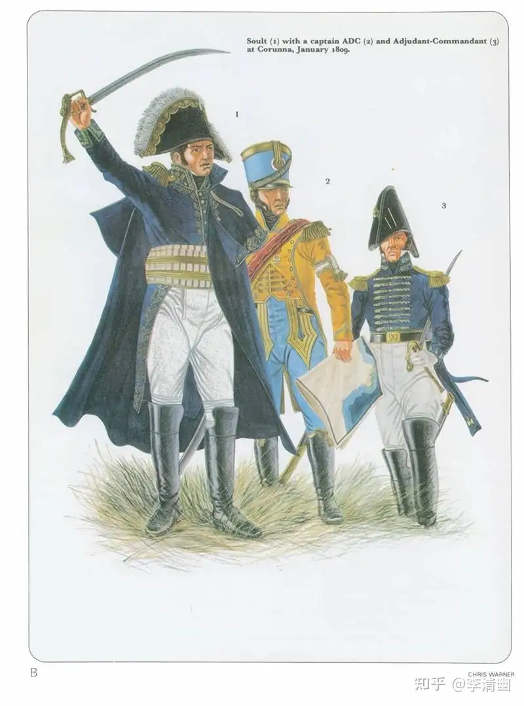
高定女裙装也是。两边肩角像是荡漾的云朵，顺流而下蜿蜒而上的细流勾勒巍巍挺拔的山峰，这是定制胸线的功劳。往后退一点，你会看到裙子的腰线和护腰都是精心剪裁和组合。
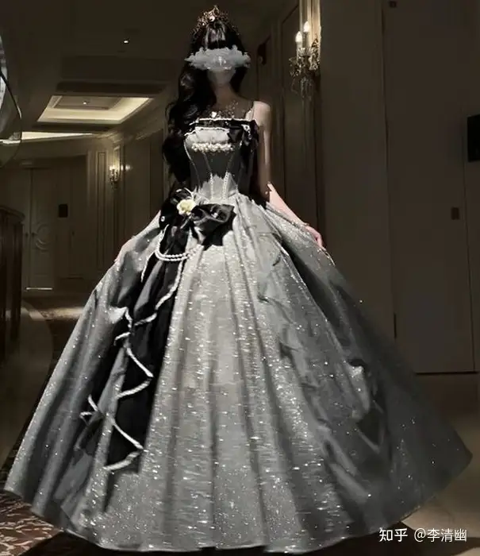
可要你是再往下看，裙身和裙摆，就是千篇一律的百褶，和对色彩或图案的呼应。
这就是美学中的典型结构，把视觉中心放在人物的上半端，突显人物身份的华贵。使得整套服装有节奏。这就是画画中的上紧下松。
汉服也是。唐襦裙也是在肩角有很多巧思，胸前绘花绘鸟，到了裙身部位就是从简设计。明晚期的立领裙也是一样，立领的版型和纽扣，极为细致，从脖子到胸前曲线被勾勒清晰，裙身裙摆都是辅成。
中西服装出发点都相差不多，这就说明这种衣服结构的定义自古以来就是美的象征。人必须要展现的东西极为突出（比如头饰比如胸围比如腰身），其他的身体部位剪裁从简才会相得益彰。
可如果一件衣服什么都要展示，什么部位都要表现，就会让人看得眩晕眼花缭乱。
就比如满清皇帝的常服，皇后的正服。
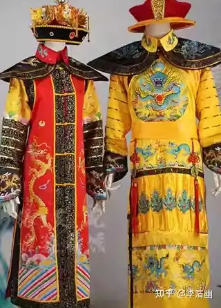
从衣服领子到鞋底，都是极致的设计堆砌，图案从上铺到尾。让人看得分不清主次。
满清的官服更是独具匠心。毫无任何版型设计，从上到下竖直放料没有腰线，无论身材都看着像个水桶。更别说满清官服都带佛珠（藏传佛教），更是拉低视觉中心。
民间有样学样，无论什么衣服都是没有结构，都只把钱放在用料和做工上。根本看不出任何设计。
再加上前面说的颜色饱和度过高，我真的很难形容这种衣服跟美学挂钩。
到了今天，为什么那么多人迷信人不可貌相，那么吃爱国饭的博主邋里邋遢也敢于出镜。
不得不说，是满清几百年来的审美错路，造成了讲美无用的思维习惯。
# 《置身事内》
来源知乎
这本书传递了一个思想：
中国政府对经济的参与不是一般意义上的税收、监管和宏观调控，而是直接使用土地、信贷、国企、产业基金和融资平台参与生产与投资。脱离政府讨论中国经济，很多现象就无法解释。
一般经济学入门书籍把世界分成两个部分：
市场负责生产，政府负责纠正市场失灵。
但中国现实并非如此。地方政府不仅监管企业，也可能是土地供应者、基础设施建设者、信贷协调者、招商者、投资者和债务承担者。
而且政府还不是铁板一块。
中央政府关心全国稳定、宏观风险和战略安全；地方政府关心财政收入、就业、投资、产业和官员考核；省、市、县、乡之间又有不同的收入来源、支出责任和行为方式。
于是就暴露出了一个链条：
分税制改变地方财政激励；
地方政府缺少稳定税源，却承担大量发展和公共支出责任；
土地成为少数能够直接控制和资本化的资源；
地方政府通过土地出让、融资平台和银行信用筹集资金；
资金被投入道路、新城、园区和基础设施；
基础设施用于吸引工业企业；
工业化创造税收、就业和产值，又推高土地价值。
这样，土地、银行、房地产、城市化、地方债和工业化就不再是彼此分离的新闻话题，而成为一条完整的因果链。
在兰小欢的叙述中，政府与市场不是两台独立机器，而是在发展过程中彼此塑造。
地方政府修建基础设施、配置土地和推动招商，帮助企业降低工业化初期的成本；企业成长、就业扩大和产业聚集，又为地方政府创造收入和进一步投资的条件。
这套机制确实能够解释中国为什么能在较短时期内完成大规模工业化和城市化。
但同一套机制也会产生另一面：
为了招商而低价供应工业用地，需要依靠高价住宅和商业用地补偿；
为了提前建设基础设施，需要依靠土地升值和未来收入举债；
为了扩大投资和就业，地方政府倾向于争项目、建园区、扩张城市；
当土地价格持续上涨时，这套循环可以不断运转；
当房地产和土地收入下降时，债务、银行风险和财政压力就会暴露出来。
所以，地方政府不是先做对了很多事情，后来又突然犯错；很多后来的问题，本来就是早期发展模式的内生结果。
创造增长的机制，也在积累增长的代价。
能把 “经济奇迹” 和 “结构性风险” 放在一条逻辑链上解释，是这本书最成熟的地方。
但这写法特别适合入门读者，因为它训练的不是立场，而是机制思维：
不先问一个政策善不善，而先问谁在推动、资金从哪里来、收益归谁、风险最后落到哪里。
当然，这是经济学解释本身的弊端：
主要是解释 “是什么” 和 “为什么”，涉及 “怎么办” 时相对谨慎。
以及回避：谁有决定权，谁获得收益，谁承担代价，谁能够说不。
这是政治经济学的核心。
书中并非完全没有涉及分配、贫富差距和改革问题，但它的主要任务毕竟是解释政府行为。
于是权力关系有时容易被转写成 “激励机制”，利益冲突容易被转写成 “政策权衡”，个体所承受的代价则可能变成宏观模型中的成本。
这会产生一种潜在误读：
因为一项制度有历史原因，所以它是合理的；
因为政府面临现实约束，所以被转嫁的成本也是不可避免的。
换句话说，他在回避 “正当化”“合理性” 问题。
自然而然，他的另一个问题就暴露出来了：它写出了政府的能力，但对政府权力的边界讨论得不够。
政府可以为新产业承担早期风险，但也可以把土地、信贷和订单集中给特定企业；可以建设成功的产业集群，也可以留下空置园区和重复项目；可以用长期规划突破私人资本不愿承担的风险，也可能因为缺乏退出机制而继续为失败项目输血。
所以，真正困难的问题不是 “政府应该下场还是不下场”，而是：
政府根据什么信息下场？
谁承担判断错误的责任？
成功以后政府是否退出？
企业能否在没有政治关系的情况下公平竞争？
社会有什么机制阻止政府把成本转移给弱势群体？
所以，“合法性” 和 “权力边界” 问题也回避了。
当然，有趣的是，他没讲的部分，很契合书的标题：置身事内。
中国政府不是站在市场外面的裁判，而是 “置身事内” 的参与者。
它解释了中国这台增长机器：
土地资本化 — 政府融资 — 基础设施 — 招商引资 — 工业化与城市化 — 土地升值 — 再次融资。
解释了地方政府怎样把土地变成财政收入和抵押物，把未来土地升值和税收收入变成今天的融资，再把融资转化成道路、园区、地铁、新城和工业项目；基础设施改善以后，企业进入、人口聚集、房价上涨、税基扩大，地方政府又获得下一轮融资能力。
但这只是资产负债表的一面。
从社会一侧看，这些要素分别对应着具体的人。
土地来自农村集体和被征地者；
银行信贷背后是居民与企业的储蓄；
城市建设资金最终对应着购房者支付的高房价；
工业化所依靠的低成本劳动力，大量来自公共服务权利不完整的农民工；
地方债务对应的是未来财政收入和公共资源；
出口竞争力的一部分，则来自劳动者收入和居民消费在国民收入分配中的相对克制。
也就是说，政府之所以能够 “集中力量办大事”，是因为它能够把分散在社会中的土地、储蓄、劳动力和未来收入集中起来，转化成工业化资本。
这既创造了真实的公共收益，也形成了真实的分配关系。
道路、港口、电网、工业园区和城市基础设施确实提高了生产率；但资源集中并不是无成本的。农民失去土地发展权，居民以高房价承担城市建设成本，储户以相对有限的金融选择支持银行信贷，农民工则在贡献劳动力的同时，长期无法获得与户籍居民完全相同的教育、医疗和社会保障。
这背后，没有讲出来的是：
政府利用政治和行政能力，把社会资源集中起来进行大规模投资；投资创造了增长，但成本和收益在不同群体之间并不对称。
所以，我读《置身事内》的时候，会自主的代入一个视角：
地方政府是规则制定者，是资源控制者，也是亲自下注的投资者。
这三种身份结合起来，能够产生惊人的执行力，却也会形成严重的利益冲突。
就比如：
当地方政府依靠土地收入和房地产融资时，它究竟会努力降低住房成本，还是维持土地价值？
当地方政府既招商又监管企业时，它能否平等对待没有政治关系的竞争者？
当政府投资项目失败时，谁来判断应该终止，谁来承担责任？
如果官员的任期短于项目和债务周期，他是否会倾向于把收益留在当下、风险留给继任者？
兰小欢倾向于从财政压力、官员激励、地区竞争和发展目标解释地方政府行为。
如果只讲激励，很多权力问题就会被改写成技术问题：
征地矛盾成为 “城市化成本”；
高房价成为 “土地财政副作用”；
农民工公共服务不足成为 “区域发展不平衡”；
地方债成为 “财政金融风险”。
这些概念没有错，但它们容易遮蔽最重要的问题：
谁决定这种代价值得承担？
谁获得主要收益？
谁承担主要损失？
没有参加决策的人为什么必须接受结果？
“政策权衡” 从来不是在真空中完成的。一个群体认为值得付出的代价，往往由另一个群体承担。
在工业化和城市化早期，基础设施稀缺，修一条道路、建一个港口、接通电网，往往能显著提高生产率。人口不断进入城市，土地升值，工业和房地产扩张，未来增长可以覆盖今天的债务。
这时，政府集中资源的能力是一种明显优势。
但随着城市扩张、基础设施逐渐饱和、人口结构变化、房地产需求减弱，新增投资的回报开始下降。过去形成的债务却不会自动消失，依赖土地收入的财政体系也难以立即转型。
更深的问题是，过去的成功本身创造了新的利益结构：
地方政府依赖土地和投资；
银行依赖政府信用和抵押资产；
房地产关系到地方收入与金融稳定；
居民家庭的大量财富集中在住房；
国企、城投和建设部门依赖项目延续；
中央又必须防止地方债务和房地产风险集中爆发。
于是，几乎所有人都知道旧模式不可持续，却没有人能够轻易停止它。
因为停止意味着重新分配损失。
谁承担房价调整？
谁填补地方财政缺口？
谁处理城投债务？
谁为闲置项目负责？
怎样在减少投资的同时维持就业和公共服务？
既然政府下场，置身事内，那么就不能只讲一面，而不讲另一面。
所以读《置身事内》，最好始终在书页旁边追问四个问题：
政府使用的资源从哪里来？
增长的收益最终归谁？
项目失败的风险由谁承担？
承担成本的人有没有拒绝的权利？